Uma campanha nova. A sua equipe continua.
Na primeira abertura após atualizar, a campanha retorna à fase 1 e as missões gerais ainda não resgatadas reiniciam. O recomeço acontece uma única vez, para acompanhar as mudanças nas fases e no balanceamento.
Vocês mantêm heróis, níveis, estrelas, habilidades, atributos, equipamentos, inventário e moedas. Missões de ascensão e de liberação de heróis em andamento também continuam, assim como as propostas lendárias já pagas. Recompensas resgatadas permanecem registradas.
Morvann entra na briga.
Espada pesada, marcas de fúria e pouca vontade de cair. Nosso novo berserker ocupa o meio da formação e concentra seu dano em um único alvo.

A última palavra é dele.
- Quatro habilidades ativas e duas passivas, com marcas por alvo, enfraquecimento de defesa e dano verdadeiro.
- Lâmina do Abismo: ao desbloquear a habilidade, Morvann recebe 5% fixos de roubo de vida nos ataques e habilidades diretas elegíveis. A cura considera o HP realmente retirado do alvo.
- Vontade Inquebrável: impede a queda uma vez por combate, com duração inicial de 5 segundos e bônus ofensivos durante a janela.
- Disponível no recrutamento e em novos caminhos do Despertar. Possui progressão até 2★ e nove espadas próprias, do Nv.10 ao Nv.90.
Dano absorvido por escudos e dano excedente de um abate não geram roubo de vida. Efeitos de redução de cura continuam valendo.
Conhecer as habilidades de Morvann
A espada abre caminho
- Corte do Crepúsculo: golpe físico contra um alvo.
- Ruptura Sombria: reduz a defesa física do alvo.
- Passos da Ruína: investida que reduz a velocidade de ataque.
- Lâmina do Abismo: atordoa e ganha dano verdadeiro contra alvos marcados.
Fúria até o último instante
- Fúria das Marcas: acertos diretos roubam vida e acumulam marcas; a terceira explode, causando dano e recuperando HP.
- Vontade Inquebrável: resiste ao dano letal uma vez por encontro. Precisa recuperar HP para sobreviver ao término da proteção.
O Abismo da Corrupção abre suas portas.
Vencer o Rei do Inverno abre o caminho das fases 1201–1800. Três regiões, vinte espécies e novos bosses formam a nova fronteira. Os mobs começam 10% acima dos equivalentes por função da fase 1199 do M4 e crescem gradualmente até o fim do mundo.

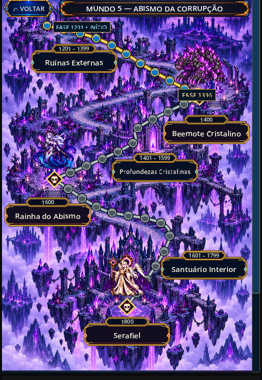
Mais funções, novas ameaças.
- 597 ondas comuns, com 6–9 inimigos e funções de ataque, defesa, cura e controle.
- Curadores, tanques e atacantes combinam dano, veneno, queimadura e controle em ondas maiores.
- Entrada recalibrada: os mobs começam 10% acima das referências por função da fase 1199 do Mundo 4 e crescem gradualmente até 1799.
- Caótico: −15 pontos percentuais de resistência a dano e −10 pontos de chance crítica para os heróis e aliados.
- Inimigos do Nv.100 ao 125. O teto atual dos heróis continua no Nv.100.
- O AUTO-PROGRESSO segue pelas fases e inicia os bosses liberados. A conclusão exige vencer Serafiel.
Os novos bosses foram ajustados para desafiar equipes avançadas. O equipamento Nv.90 +12, por si só, não garante a passagem.

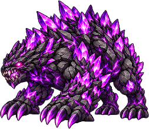
Fase 1400Beemote Cristalino
Na calibração final deste novo boss, HP, ataques e defesas foram reduzidos em 30%. Mantém pressão frontal, estilhaços na retaguarda e pulsos da Carapaça Ressonante. Aos 50% de HP, a carapaça se rompe e o ritmo muda.

Rainha do Abismo
Tentáculos e magia em vários impactos. É imune à condição de queimadura; o dano direto de fogo continua funcionando.

Serafiel
O Falso Misericordioso encerra o mundo com Eclipse da Graça. Imune a controles, mas ainda recebe dano e efeitos válidos de outras categorias.
Ver atributos finais do Beemote
| HP | Ataque físico | Ataque mágico | Defesa física | Defesa mágica |
|---|---|---|---|---|
| 2.100.000 | 133.000 | 126.000 | 2.940 | 2.800 |
Ver uma batalha no Abismo

O Abismo guarda mais ameaças.
Os bosses das fases fixas não estão sozinhos. Dois encontros extras podem interromper as ondas comuns do Mundo 5, cada um com seu próprio jeito de pressionar a equipe.

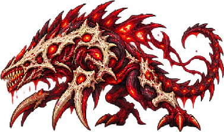
Extra do Mundo 5 · Dano físicoDevorador Carmesim
A linha de frente enfrenta investidas e repulsão, enquanto os ataques em área ameaçam o restante da formação.
- Investida Rubra: golpe frontal com repulsão.
- Turbilhão Escarlate: dano físico em toda a equipe.
- Fúria Carmesim: ataque em área que aplica queimadura.
- Fome Insaciável: recupera vida ao causar dano.
200.000 ouro · 200 gemas · épico compatível até Nv.90.

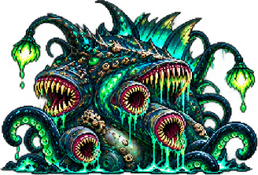
Extra do Mundo 5 · Magia e venenoLeviatã Putrefato
Veneno e controle se espalham pela formação. Sua pressão contínua exige atenção ao sustento da equipe.
- Mordida Putrefata: magia e veneno no alvo frontal.
- Tentáculos da Maré Morta: atinge a equipe e atordoa.
- Dilúvio Corrosivo: magia em área com veneno.
- Maré da Decomposição: mantém uma aura de decomposição periódica.
225.000 ouro · 250 gemas · épico compatível até Nv.90.
São recompensas das missões, além do combate. O nível do equipamento respeita o que a formação vencedora pode equipar. Stoffel possui uma seção própria abaixo.
Stoffel, o Indomável.
Alguns encontros valem mais do que a recompensa imediata. Stoffel tem segredos para revelar — se vocês conseguirem vencê-lo.

Uma vitória abre uma nova pista.
O primeiro encontro espera na fase 1201. Depois, ele pode reaparecer nas ondas comuns elegíveis de qualquer mundo, sem ocupar os bosses fixos.
- Vitórias revelam os Segredos da Ascensão, usados para desbloquear a técnica e as categorias de equipamentos lendários.
- O Pergaminho dos Segredos, em Outros, registra as descobertas e não é consumido.
- A cada derrota, Stoffel volta mais forte. Completar os segredos não encerra seu crescimento.
Ver regras de aparição e consequência da derrota
- Primeiro encontro: garantido na fase 1201.
- Depois: 0,1% por onda comum elegível, em qualquer mundo. Bosses fixos não são substituídos.
- Se Stoffel vencer: retorno ao Mundo 1 e restrição de atalhos e viagens entre mundos por 10 minutos reais. Fases abertas do mesmo mundo e avanço sequencial no AUTO continuam disponíveis.
- Quando vocês vencem: o próximo encontro ganha, de forma composta, 2% de HP, 5% de ataque físico/mágico e 3% de defesa física/mágica.
- Caçada de uma vitória: 150.000 ouro, 150 gemas e épico compatível até Nv.80.
Uma nova vida para sua melhor peça.
A opção Ascensão transforma épicos fabricados em lendários. A nova tela de Redistribuir organiza atributos, faixas e custos para comparar cada decisão.
Do épico ao lendário
- Exige peça fabricada Nv.90+, técnica e categoria reveladas pelos Segredos de Stoffel.
- Custo: 3.000.000 de ouro e três de cada selo: Matriarca, Véu, Cadinho e Astarok.
- Os quatro selos têm 5% de chance nos respectivos encontros extras dos mundos 1–4.
- A peça conserva arte, herói, refino, têmpera e extras; a raridade passa a laranja.
- 24 efeitos lendários trazem novas opções ofensivas e defensivas. Efeitos iguais usam a maior magnitude e respeitam seus próprios limites.

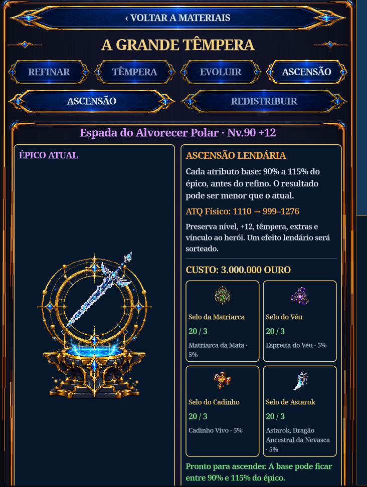
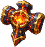
Escolher, rolar, comparar.
- Uma base: 100.000 de ouro ou 10 gemas.
- Efeito lendário: 150.000 de ouro ou 15 gemas.
- Redistribuir todos: uma prévia conjunta das bases e do efeito. O preço soma os componentes presentes: três bases mais efeito custam 450.000 de ouro ou 45 gemas.
- A proposta é paga uma vez. Aceitar aplica; manter descarta sem reembolso. A decisão não cobra novamente.
- A prévia paga permanece ao reabrir o jogo. Extras não elegíveis à rolagem são preservados.
O inventário acompanha vocês.
- A lista segue o herói selecionado no cabeçalho, mostrando suas peças e as compatíveis desequipadas.
- Peças usadas por outro herói ficam fora. Uma proposta já paga continua disponível para resolver.
- Atributos atuais e base antes do refino ficam identificados. O custo total e a moeda aparecem antes da confirmação.
- Selos: limite utilizável de 100. Catalisadores: 999. Excedentes antigos são preservados.

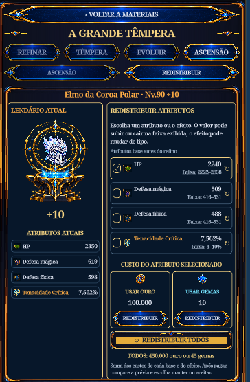

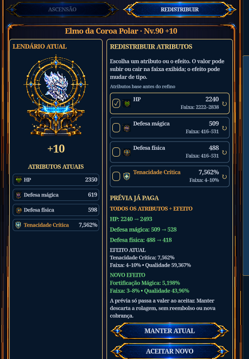
Consultar os 24 efeitos lendários e suas faixas
Armas e luvas sorteiam efeitos ofensivos; os demais espaços, defensivos. A faixa define a magnitude sorteada. Regras, intervalos e condições de ativação de cada efeito continuam valendo.
Efeitos ofensivos
- Roubo de Vida · 1–4%
- Penetração Física (%) · 2–6%
- Penetração Mágica (%) · 2–6%
- Penetração Física fixa · 30–90
- Penetração Mágica fixa · 30–90
- Dano Verdadeiro · 1–2%
- Aumento de Ataque · 3–8%
- Amplificação de Habilidades · 2–6%
- Caçador de Titãs · 2–5%
- Golpe de Execução · 2–5%
- Fio Mortal · 3–7%
- Ímpeto de Combate · 1–3%
Efeitos defensivos
- Vitalidade Lendária · 3–8%
- Fortificação Física · 3–8%
- Fortificação Mágica · 3–8%
- Redução Geral de Dano · 1–3%
- Resistência a Controle · 4–10%
- Tenacidade Crítica · 4–10%
- Escudo Protetor · 4–8
- Regeneração em Combate · 0,3–0,8
- Dano ao Contato · 50–150
- Redução de Dano de Skills · 2–5%
- Evasão Emergencial · 1–3%
- Última Resistência · 4–8%
A jornada continua até o Nv.100.
Cada herói ganha sua própria jornada de 2★. A nova estrela libera mais níveis e permite aprimorar habilidades até o Nv.12.
A segunda estrela
- Inicie a jornada com o herói em Nv.75 e 1★. Ao concluí-la, o limite sobe de 75 para 100.
- Livro de 2★ na loja: 1.200.000 de ouro ou 300 gemas. A versão por gemas reduz pela metade as quantidades dos objetivos.
- O livro também pode cair após a fase 600: 1% por mob e 2% por boss elegível.
- As dez jornadas incluem abates, ondas, elites, bosses, objetivos temáticos e entrega de materiais.
Habilidades até o Nv.12
- Sem 2★: limite Nv.10. Com 2★: limite Nv.12.
- A curva de aprimoramento usa incrementos menores. O antigo Nv.10 corresponde ao novo Nv.11; o Nv.12 acrescenta uma melhoria.
- Níveis e pontos investidos são preservados. A atualização não concede os dois aprimoramentos novos automaticamente.
- Descrições mostram o efeito atual. A mudança do próximo nível aparece somente na comparação de aprimoramento.
O próximo conjunto vem do gelo.
Equipamentos Nv.80 e Nv.90 ampliam o caminho de evolução. A coleção Boreal Nv.90 traz 19 visuais próprios de neve e aurora, incluindo a espada de Morvann.


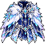

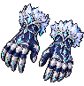

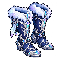


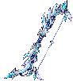

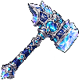


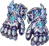

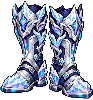


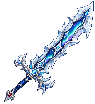
As 19 peças Boreais. Toquem ou cliquem para ampliar e consultar os atributos-base.
Fabricação e evolução
- Técnicas Nv.90: obtidas somente nas fases 1001–1200.
- Receitas Nv.90 usam materiais nativos do Mundo 4 e troféus de Fenrir, Sacerdotisa e Rei do Inverno, além de recursos dos mundos 2 e 3.
- Fabricar Nv.90 ou evoluir Nv.80 → 90 exige um épico Nv.50 desequipado, escolhido por vocês e consumido no processo.
- Fabricação e evolução têm 100% de sucesso. A evolução preserva os extras, o refino e o progresso de têmpera da peça.
Essência e materiais
- As receitas de fabricação Nv.50 / 60 / 70 / 80 / 90 passam a exigir 150 / 220 / 300 / 400 / 500 Essências da Forja.
- Na evolução Nv.80 → 90, os complementos custam 15 materiais do Mundo 2, 10 do Mundo 3 e 250 Essências; na fabricação Nv.90, são 30 / 20 / 500.
- Os cinco materiais abissais antigos foram substituídos. Estoques existentes são convertidos 1:1 em materiais comuns nativos, preservando excedentes.
- Épicos Nv.50/60 vão até +10. Épicos Nv.70/80/90 vão até +12.
Ver custos de fabricação e evolução
| Tier | Fabricar | Evoluir para esse tier | Refino máximo |
|---|---|---|---|
| Nv.50 | 25.000 | — | +10 |
| Nv.60 | 1.200.000 | 500.000 + 50.000 por refino | +10 |
| Nv.70 | 1.800.000 | 1.000.000 + 50.000 por refino | +12 |
| Nv.80 | 2.520.000 | 1.500.000 + 50.000 por refino | +12 |
| Nv.90 | 3.240.000 | 2.000.000 + 50.000 por refino | +12 |
O custo de evolução considera o refino atual da peça de origem. A prévia da Oficina mostra o total antes de confirmar.
Lendários chegam ao +15.
Os preços de refino agora aumentam a cada passo. O Catalisador oferece uma ajuda nas tentativas mais difíceis.
Uma chance a mais
- Catalisador: +5 pontos percentuais na chance de uma tentativa, com no máximo um por vez.
- Também é consumido na falha. A peça conserva seu nível de refino e têmpera.
- Loja: cinco por 50 gemas.
- Drop nos mundos 4 e 5: 2% nos bosses principais e 5% nos extras.
- Os níveis +13 a +15 são exclusivos dos lendários.
Exemplo: uma tentativa com 5% de chance base passa a 10% com um Catalisador.
| Próximo nível | Ouro | Chance base |
|---|---|---|
| +10 | 125.000 | 20% |
| +11 | 150.000 | 15% |
| +12 | 175.000 | 10% |
| +13 | 200.000 | 5% |
| +14 | 225.000 | 5% |
| +15 | 250.000 | 5% |

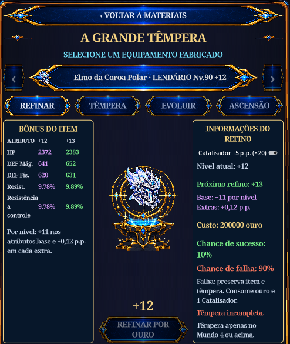
Confiram antes de tentar.
- A têmpera exigida precisa estar completa para liberar a tentativa.
- O painel mostra custo, próximo nível, chance de sucesso e de falha.
- A chance exibida já considera o Catalisador selecionado. O nível do item e sua têmpera são preservados na falha.
Mais motivos para voltar ao campo.
Caçadas dos mundos 4 e 5 passam a cobrir os mobs, bosses e extras. As recompensas ajudam tanto a formação ativa quanto os heróis que aguardam sua vez.
Duas novas diárias
- Caçada aos Mundos Conquistados: vença 100 mobs comuns em mundos já concluídos e receba 50 gemas.
- Caçada Extraordinária: vença um boss extra e receba 20 gemas.
- As missões usam ciclos de 24 horas, com um resgate por missão no ciclo. Somente batalhas reais contam.
- Caçadas de mobs dão XP a todos os heróis recrutados: 1.000 / 2.000 / 3.000 / 4.000 / 5.000 XP, conforme o mundo 1 / 2 / 3 / 4 / 5.
- Missões de bosses premiam épicos compatíveis, limitados ao nível equipável. Inventário cheio preserva o prêmio para coleta posterior.

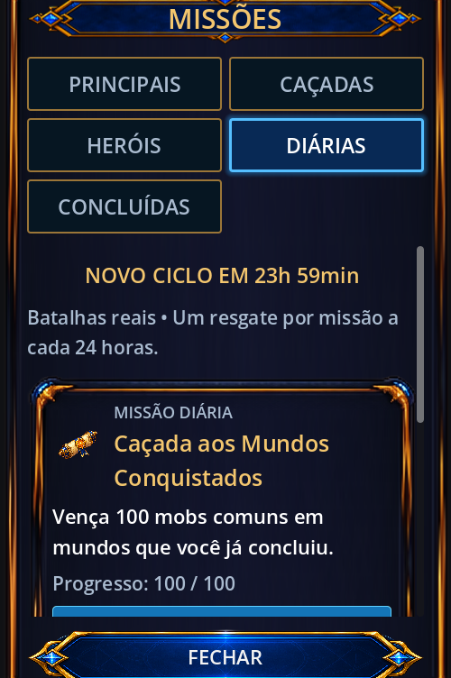
Ver recompensas das missões de bosses
| Objetivo | Épico até | Ouro | Gemas |
|---|---|---|---|
| Fenrir · 850 | Nv.70 | 150.000 | 800 |
| Sacerdotisa · 1000 | Nv.80 | 200.000 | 1.000 |
| Rei · 1200 | Nv.90 | 300.000 | 1.200 |
| Astarok · 3 vitórias | Nv.80 | 120.000 | 100 |
| Beemote · 1400 | Nv.90 | 400.000 | 1.500 |
| Rainha · 1600 | Nv.90 | 500.000 | 1.800 |
| Serafiel · 1800 | Nv.90 | 650.000 | 2.200 |
| Devorador · 3 vitórias | Nv.90 | 200.000 | 200 |
| Leviatã · 3 vitórias | Nv.90 | 225.000 | 250 |
| Stoffel · 1 vitória | Nv.80 | 150.000 | 150 |
Missões já resgatadas não concedem as novas recompensas retroativamente.
Ouro na campanha
- Ganhos recalibrados para valorizar o avanço. Encontros raros também passam a pagar ouro.
- Limites por hora: 60 mil / 120 mil / 300 mil / 600 mil nos mundos 1 / 2 / 3 / 4. O Mundo 5 também usa teto de 600 mil.
- São tetos de recompensa; a renda depende da equipe e do ritmo dos combates.
Quando vocês saem
- Recompensas offline continuam limitadas a seis horas, com rendimento de 20%.
- O ganho respeita o orçamento de ouro do mundo.
- O offline não avança fases, derrota bosses nem completa as novas diárias.
Novos pesos na formação.
Reduzimos a força constante de alguns kits e reforçamos outras ferramentas. Os valores por nível também acompanham a nova curva de aprimoramento explicada abaixo.
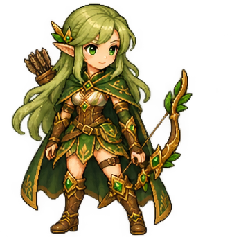
Lyn
A Marca continua ajudando a equipe, mas Lyn perde parte do poder próprio e da cadência que sustentavam seu dano contínuo.
- Ataque básico: 215% → 200% do ataque físico.
- Velocidade de ataque base: aproximadamente −5% de ataques por segundo.
- Marca do Caçador: bônus próprio no Nv.1 de 22% → 12% de ataque. O bônus dos demais aliados continua em 15%.
- Harmonia: coeficiente de dano por carga reduzido em 5%, antes da redistribuição dos níveis.
- Instinto Élfico: menos chance e dano crítico na curva. Passo da Floresta: bônus inicial de velocidade de 27,5% → 25%.
Nerissa
Harmonia Fúnebre passa a recompensar abates da própria Canção da Morte. Encore ganha força, enquanto o buff de atributos fica mais contido, especialmente nas lutas contra um boss sozinho.
- Canção da Morte: coeficiente fortalecido em 50%, antes da redistribuição global de níveis. No Nv.1, cada nota passa de 67,5% → 101,25% do ataque mágico. As sete notas e suas regras de alvo permanecem.
- Harmonia Fúnebre: 10% → 4% de atributos por carga; máximo de 50% → 20%. Mantém cinco cargas; duração de 30 → 45 segundos.
- Geração de cargas: somente por abate direto da Canção da Morte. Removido o ganho a cada dois lançamentos que causavam dano.
- Encore fortalecido: 12% → 15% do ataque mágico por segundo no Nv.1. Na curva atual, chega a 30% no Nv.11 e 31,5% no Nv.12.
- Espírito da Canção: bônus inicial de 5% → 6%, com a progressão ajustada à nova curva.
Nymeris
Os servos ficam mais frágeis e há mais espaço entre as principais conjurações. Ascensão Profana conserva seu papel de pico de poder, com números menores e marcos de cadência redistribuídos.
- HP-base dos servos: Arauto e Bastião mantêm o corte acumulado de 32,5%. O Executor fica com −52,75% em relação à base anterior à atualização, incluindo a redução adicional de 30% na calibração final.
- Funções dos servos: Arauto fica mais recuado, Executor prioriza dano e Bastião permanece na frente para ajudar a proteger a equipe.
- O resumo da fase inclui o dano causado e recebido pelos servos nos totais da Nymeris.
- Despertar dos Condenados: recarga base de 3 → 8 segundos na comparação com a base anterior à atualização.
- Veredito: recarga base de 18 → 24 segundos.
- Ascensão Profana: dano por ataque da alma no Nv.1 de 100% → 90% do ataque mágico; curva atual de 153% / 160% / 167% nos Nv.10 / 11 / 12.
- Os marcos de 1 / 2 / 3 ataques por segundo das almas passam dos Nv.1 / 5 / 10 aos Nv.1 / 6 / 11.
- Fúria: duração no antigo teto de 10 → 9 segundos, alcançada agora no Nv.11.

Mira
Mais impacto na hora do acerto e um pequeno corte na queimadura. Projétil Arcano recebe o maior reforço do kit.
- Projétil Arcano: recarga de 7 → 6 segundos; coeficiente no Nv.1 de 220% → 363% do ataque mágico, um aumento total de 65% na base.
- Chuva de Cometas e Ruptura Astral: dano direto +10% no Nv.1, com os aprimoramentos seguintes seguindo a curva redistribuída.
- Queimadura: dano periódico e limite por ataque mágico −5%. Duração e redução de cura mantidas.
- Véu Arcano: contornos e brilhos mais leves para facilitar a leitura do personagem.
Aelia
O Santuário também precisa sair do papel.
- No AUTO, Santuário da Vida passa a ser considerado quando há um aliado ferido.
- Ressurreição e cura de emergência mantêm prioridade.
Kael
O escudo aparece quando o bloqueio realmente acontece, com uma proteção consistente para golpes físicos e mágicos.
- Pele de Ferro: bloqueio reduz em 50% o dano final de um golpe elegível, antes de consumir escudos.
- Chance de 20%, com intervalo mínimo de 1,2 segundo entre bloqueios. Dano periódico não ativa o efeito.
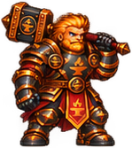
DorrikAjuste global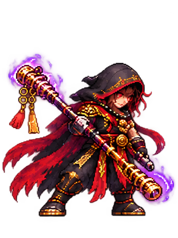
KharunAjuste globalFae, Dorrik e Kharun também seguem a curva redistribuída e o novo limite de habilidades com 2★. Não há um novo buff ou nerf próprio de kit confirmado para eles nesta atualização.
Ver números da Lyn na curva atual
| Efeito | Nv.1 | Nv.10 | Nv.11 | Nv.12 |
|---|---|---|---|---|
| Marca · ataque próprio | 12% | 28,2% | 30% | 31,8% |
| Instinto · chance crítica | 5% | 27,5% | 30% | 32,5% |
| Instinto · dano crítico adicional | 10 p.p. | 32,5 p.p. | 35 p.p. | 37,5 p.p. |
| Harmonia · ataque físico por carga | 9,12% | 27,588% | 29,64% | 31,692% |
p.p. significa pontos percentuais. O bônus da Marca para os outros aliados permanece em 15%.
Eles também voltaram à forja.
Kits e atributos dos mundos 3 e 4 foram revistos. Alguns encontros ganham pressão; outros tiveram defesas recalibradas. A tabela reúne os valores finais.
Fogo e aço
- Dragão de Fogo, fase 500: HP e ataques +10%.
- Malkor, fase 600: mais HP, ataque e defesa. O ataque final chega a 13.250 nos dois canais.
- Soberano Infernal, fase 700: ataques finais de 15.250; suas habilidades que ainda não queimavam passam a aplicar queimadura.
- Malkor e Soberano ficam com 22% de resistência a crítico e chance de ignorar controle, antes 20%.
O gelo responde
- Fenrir: alterna saltos entre os alvos vivos da retaguarda e encadeia as garras, respeitando provocação. Recebe mais ataque, HP, defesas e crítico.
- Sacerdotisa: ganha Véu Arcano e quatro impactos de Chuva de Cometas. A defesa mágica final fica em 6.640; dano físico atravessa o escudo mágico do Véu.
- Rei do Inverno: ganha Vontade Inquebrável por 5 segundos, uma vez por combate, e mais ataque. As defesas finais ficam em 2.860 por canal; o HP é 1.650.000.
- Astarok: a calibração final acrescenta 1.000 aos ataques físico e mágico, aumenta em 20% a velocidade e reduz em 10% as recargas recorrentes. O ataque final varia de 34.600 a 41.600 por canal, conforme a fase. Também recebe Baforada de Gelo azul em área e morte por fragmentação glacial.
Fenrir, Sacerdotisa e Rei também recebem +40% no coeficiente dos básicos, +20% de velocidade de ataque própria e 750 de penetração física e mágica fixa. O bônus geral de velocidade do Mundo 4 também se aplica.
Ver atributos finais dos bosses
| Boss | HP | Ataque físico | Ataque mágico | Defesa física / mágica |
|---|---|---|---|---|
| Malkor · 600 | 656.155,5 | 13.250 | 13.250 | 2.150 / 2.150 |
| Soberano · 700 | 760.760 | 15.250 | 15.250 | 2.650 / 2.650 |
| Fenrir · 850 | 1.050.000 | 27.540 | 20.610 | 2.310 / 2.310 |
| Sacerdotisa · 1000 | 1.320.000 | 24.150 | 32.620 | 2.640 / 6.640 |
| Rei do Inverno · 1200 | 1.650.000 | 25.780 | 35.460 | 2.860 / 2.860 |
Astarok usa atributos que variam com a fase: 34.600–41.600 de ataque físico e mágico no encontro extra.
Avançar também muda a defesa.
Os mundos avançados pressionam com mais cadência, crítico e dano adicional. Montar a proteção da equipe passa a exigir atenção a mais de um atributo.
Inimigos e ambientes
- Mundos 4 e 5: +10 pontos percentuais de chance crítica e +10% de velocidade de ataque para inimigos comuns, bosses e extras.
- Mundo 3, a partir de 501: mobs comuns recebem +20% de ataque.
- Fase 700 em diante: mobs comuns recebem +15% de velocidade; corpo a corpo ganha +800 de ataque e distância +1.500 nos canais de ataque que já usavam.
- Fase 1001 em diante: mobs comuns recebem mais 1.000 de ataque físico e mágico.
- A curva do Mundo 5 foi revista para crescer acima do Mundo 4.
- Calor, Gélido e Caos afetam a equipe e seus aliados. Os habitantes do próprio mundo não sofrem essas penalidades.
Resistir não é ignorar tudo.
- Resistência a dano: teto aumentado para 50%.
- Dano adicional dos inimigos: mínimo de 10 / 15 / 20 pontos percentuais nos mundos 3 / 4 / 5. Valores maiores existentes prevalecem.
- Esse atributo contrapõe a resistência: 50% de resistência contra 15 pontos de dano adicional resulta em 35% de resistência nessa etapa da defesa.
- Precisão dos bosses: mínimo de 125%, equivalente a +25 pontos sobre a base de 100%.
- Esquiva dos bosses: mínimo de 15% no Mundo 4 e 20% no Mundo 5.
Menos atrito entre uma luta e outra.
Revisamos o que acontecia durante o combate, ao trocar a formação, ao forjar e ao coletar recompensas.
Combate e habilidades
- Corrigidas cadeias de controle que cancelavam continuamente ataques de bosses. Após um controle forte, bosses elegíveis recebem 2 s de recuperação contra novos controles fortes, interrupções e deslocamentos. O Rei mantém sua janela de 5 s.
- Reações ao dano mais breves e espaçadas. Golpes seguidos deixam de aparentar um atordoamento permanente.
- Escudos temporários são limpos ao encerrar a batalha; corrigidas continuações indevidas de efeitos após golpes letais.
- Regeneração e efeitos periódicos mantêm resultados coerentes em ×1 e ×2.
- Dano causado e recebido pelos servos entra nos totais de Nymeris, incluindo efeitos tardios, sem duplicação.
Heróis e progressão
- Aelia considera Santuário da Vida no AUTO quando há necessidade de cura, preservando ressurreição e emergências.
- Kael exibe o escudo no bloqueio confirmado, com a redução correta de dano físico e mágico.
- Ao trocar integrantes, a campanha retorna ao início do mundo atual. Reposicionar a mesma equipe ou salvar sem alterações mantém a fase.
- Corrigidas a exibição do requisito Nv.75/1★ e as contagens de materiais das jornadas de segunda ascensão.
- A atualização de campanha ocorre uma única vez e preserva jornadas de ascensão e recrutamento.
Oficina e inventário
- Corrigido o fechamento inesperado de Materiais ao encontrar um recurso antigo sem ícone, preservando o estoque.
- Prévia paga e atributo selecionado permanecem estáveis durante ganhos de combate e atualizações da tela.
- Redistribuir todos cobra uma vez e permite aceitar ou manter o conjunto inteiro.
- Operações que não podem ser salvas não deixam compras ou resultados de forja pela metade.
- Recrutamento, ascensão, reset e comprovantes ficam em Consumíveis; ingredientes e conhecimentos permanecem em Materiais.
Missões e recompensas
- Vitórias em bosses e extras são registradas pelo encontro correto. Repetir um resgate não duplica a recompensa.
- Equipamentos de missão respeitam a formação vencedora e o nível equipável.
- Inventário cheio preserva o prêmio para coleta posterior.
- Abates reais contam nas diárias; recompensas offline não inventam vitórias ou progresso.
- Recompensas já resgatadas continuam registradas após o recomeço da campanha.
Interface, animações e estabilidade
- Revisadas animações, recortes e efeitos dos 20 bosses. Impactos letais continuam visíveis; os mobs do Mundo 5 mostram corretamente suas poses de recuperação.
- Fenrir salta até os alvos vivos da retaguarda e retorna; Astarok recebe Baforada de Gelo azul e morte por fragmentação glacial.
- Morvann recebe efeitos vermelhos de espada e aura de fúria; Véu Arcano de Mira usa contornos leves. Mobs do Mundo 4 cristalizam ao morrer.
- Barras de HP abreviam números altos sem vazamento; o valor completo aparece na dica.
- Corrigido o retângulo branco sobre o til em “VULCÃO INFERNAL”. Seletor da Oficina e colunas de Missões cabem melhor em telas estreitas.
Mais cuidado com o que é carregado.
A preparação desta versão remove conteúdo obsoleto do pacote e evita repetir trabalho ao mostrar o personagem.
- Recursos antigos sem uso ficam fora do pacote: páginas de sprites substituídas, efeitos antigos e painéis e fundos obsoletos. As imagens atuais mantêm a qualidade.
- Prévia de Morvann reaproveitada: reduz trabalho repetido ao exibir o herói, preservando seus pixels.
- As referências dos recursos usados pelo jogo foram revisadas para evitar arquivos ausentes após a limpeza.
A amostra curta no PC ficou próxima de 60 FPS, com pausas ainda presentes ao abrir algumas telas. O desempenho em Android e o tamanho final do pacote precisam ser conferidos após a exportação. Esta atualização não promete 60 FPS constantes nem uma redução específica de consumo de memória ou aquecimento.
Agora a próxima tentativa é de vocês.
Experimentem as novas peças, montem outras formações e contem como estão os combates. Ao enviar feedback, incluam a fase, a equipe, os níveis das habilidades e os equipamentos. Esses detalhes ajudam a entender onde o desafio está divertido e onde ainda precisa de ajuste.
Bom jogo. E cuidado com quem aparece no meio do caminho.